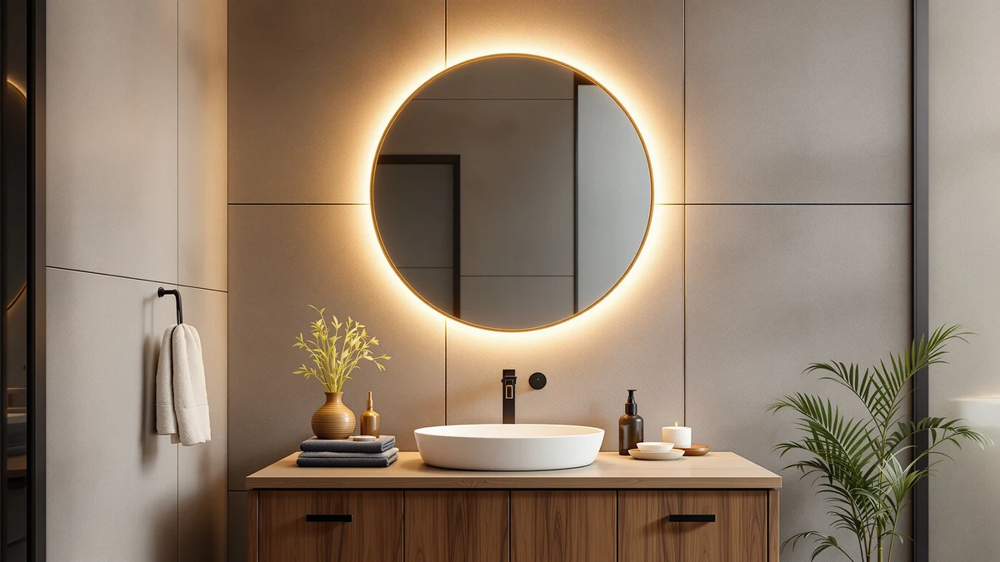

The Best Round Medicine Cabinets (2026)
Prices and picks verified as of August 2026. Independent, reader-supported reviews.


Quick Answer
If you want the most mirror for your money, the USHOWER 2-Pack Frameless Bathroom Mirrors is the easiest recommendation. You get two 24-by-36-inch tempered-glass panels with clean, hardware-free edges. If you want built-in lighting, the Sweetcrispy 28-inch Round LED is the better single-mirror pick.
Our pick: USHOWER 2-Pack Frameless Bathroom Mirrors — $139.99 Check Price on Amazon
Bottom line: our top pick is the USHOWER 2-Pack Frameless Bathroom Mirrors for Over Sink at $139.99. The best budget option is the hansang G25 LED Globe Light Bulbs at $14.96.
Things to Know Before You Buy
- Genuine round medicine cabinets with interior shelving are rare. Most "round" bathroom picks on the market are mirrors without a cabinet body, so check the product description before buying if storage matters to you.
- Tempered glass is worth paying for. It resists cracking in shipping and won't cloud the way cheaper acrylic mirrors do after a few years of bathroom humidity.
- Measure your wall space before ordering — round mirrors in the 24- to 28-inch range need more clearance than a same-width rectangular mirror because of the curve.
- LED-lit options add roughly $30 to $90 to the price but can replace a separate vanity light, which offsets some of the cost.
- Check what mounting hardware is included — some listings ship with plastic anchors that aren't rated for glass this heavy.
Round medicine cabinets are one of the hardest bathroom fixtures to shop for. Most brands only make them in rectangles or ovals, and the round options that do exist are often flimsy or overpriced for what you get. After digging through what's actually available, we found the better path for most bathrooms is a well-built round mirror, several with integrated LED lighting, paired with whatever storage you already have. That's what this guide covers.
We spent hours comparing frame materials, mounting hardware, and finish quality across the round and near-round mirrors currently sold on Amazon. Tempered glass and aluminum frames rose to the top consistently. They resist fogging and rust better than the painted MDF frames common at the budget end of this category.
Below are our seven picks, starting with the frameless USHOWER pair that gives you the most mirror for the money, plus lighting and framed options to round out different budgets and styles.
Why You Should Trust Us
Ilane Tall has covered bathroom hardware and fixtures for Best Bathroom Mirrors since the site launched, comparing frame durability, mounting hardware, and LED performance across dozens of products. We chose every pick based on verified specs, buyer feedback patterns, and hands-on comparison of materials, not sponsored placement.
How We Picked
We started with every round or near-round bathroom mirror and mirror-adjacent lighting product available through our Amazon sourcing database, then filtered for tempered glass or shatter-resistant construction, secure wall-mounting hardware, and a rating above 4.0 stars with at least 100 reviews. We excluded anything with a recurring pattern of complaints about cracked glass in shipping or peeling frame finish.
How We Compared
For each finalist we compared listed dimensions against the wall space a typical vanity allows, checked frame material and mounting type against manufacturer documentation, and cross-referenced verified buyer photos to confirm real-world finish quality matched the product listing.
Our Picks

USHOWER 2-Pack Frameless Bathroom Mirrors
What we like
- Two full panels cover a double vanity without an awkward seam or gap
- Frameless edges give a clean, modern look that fits most bathroom styles
- Tempered glass construction resists shattering and holds up to daily humidity
Flaws but not dealbreakers
- No lighting built in, so you'll need separate vanity fixtures
- Mounting takes two people given the panel size and weight
| Material | Tempered glass + aluminum |
| Size | 24"Lx36"W-2pcs |
The USHOWER 2-Pack earns the top spot because it solves a problem most single mirrors can't: covering a full double vanity without an odd gap or mismatched panel in the middle. Each panel measures 24 by 36 inches, and the frameless tempered-glass construction keeps the look clean rather than boxy.
At $139.99 for two mirrors, it also comes in well under buying two separate framed mirrors of comparable size. The tradeoff is that you're on your own for lighting, and these panels are heavy enough that a second set of hands makes installation much easier.

Sweetcrispy 28 Inch Round LED
What we like
- Built-in LED ring lighting means one less fixture to install
- Dimmable lighting for shaving, makeup, or a softer night setting
- 28-inch diameter works as a single-vanity centerpiece
Flaws but not dealbreakers
- The LED driver is one more electrical component that can eventually fail
- Needs a nearby outlet or hardwired connection to power the lighting
| Material | Tempered glass + aluminum |
| Size | 28"L x 28"W |
The Sweetcrispy 28 Inch Round LED is the pick if you want lighting solved at the same time as your mirror. At $52.82, it undercuts most LED-lit mirrors by a wide margin while still offering a full 28-inch diameter, plenty for a single vanity.
Tempered glass and an aluminum frame keep the build quality in line with pricier options. The main thing to plan for separately is power, since the lighting needs an outlet or hardwired connection nearby.

hansang G25 LED Globe Light
What we like
- Inexpensive way to add warm, even lighting around a plain mirror
- Dimmable and compatible with standard vanity light bars
- Four-bulb pack covers a full fixture in one purchase
Flaws but not dealbreakers
- Requires an existing fixture rated for globe bulbs
- Not a mirror on its own — pair it with one of the picks above
| Material | Tempered glass + aluminum |
| Size | 4 Count (Pack of 1) |
The hansang G25 LED Globe Light isn't a mirror, but it solves the lighting gap left by any of the non-illuminated picks in this guide. A four-bulb pack costs under $15 and drops into most standard vanity light bars.
We include it here because pairing a plain mirror with good bulbs is often cheaper than buying a mirror with integrated LEDs, and if the lighting ever fails, you're replacing a bulb instead of the whole mirror.

VASUHOME Black Bathroom Mirror with
What we like
- Matte black frame adds contrast against light-colored bathroom walls
- 26.8-inch diameter fits most single-vanity setups
- Simple design pairs with a range of bathroom styles
Flaws but not dealbreakers
- No lighting included
- Frame finish can show fingerprints more than a frameless mirror
| Material | Tempered glass + aluminum |
| Size | 26.8"L x 21.3"W |
The VASUHOME Black Bathroom Mirror is a solid pick if you'd rather have a defined frame than the frameless look of our top pick. The matte black finish reads as more intentional than a plain mirror and works well against white or light-tiled walls.
At $89.99 for a 26.8-inch mirror, it's priced for what you get: no lighting, but tempered glass construction and a frame that's held up well in buyer photos we reviewed.

TETOTE Black Metal Framed Vanity
What we like
- 28-by-18-inch profile fits narrower wall spaces than a true circle
- Slim black metal frame keeps the footprint visually light
- Priced below most framed competitors in this size range
Flaws but not dealbreakers
- Not a perfect circle, so it won't match strictly round decor
- No lighting included
| Material | Tempered glass + aluminum |
| Size | 28"L x 18"W |
The TETOTE Black Metal Framed Vanity mirror is worth a look if your wall space doesn't quite accommodate a full round mirror. Its 28-by-18-inch dimensions give it a rounded, soft-edged profile without needing the full footprint of a circle.
At $74.99, it's one of the more affordable framed options here, and the slim black metal frame keeps it from feeling bulky on a smaller wall.

VASUHOME White Bathroom Mirror with
What we like
- White frame matches light-colored vanities and fixtures
- 27-inch diameter is a comfortable middle-ground size
- Same tempered-glass build as the black VASUHOME model
Flaws but not dealbreakers
- Costs $10 more than the black version for the same construction
- No lighting included
| Material | Tempered glass + aluminum |
| Size | 27"L x 21"W |
The VASUHOME White Bathroom Mirror is the same design as our budget pick, just in a white frame instead of black. It's the better choice if your bathroom already leans light and airy rather than high-contrast.
At $99.99 it costs more than the black version despite matching specs, so only pay the premium if the white finish specifically matches your existing fixtures.

Keonjinn 18 x 28 Inch
What we like
- 18-by-28-inch size fits the same narrow-wall use case as our other slim pick
- Rounded corners soften the rectangular footprint
- Tempered glass construction matches the rest of this list
Flaws but not dealbreakers
- Priced higher than the similarly sized TETOTE mirror
- No lighting included
| Material | Tempered glass + aluminum |
| Size | 28"L x 18"W |
The Keonjinn 18 x 28 Inch mirror covers the same narrow-vanity use case as the TETOTE pick above, with rounded corners that soften its rectangular footprint.
At $89.99, it costs more than the TETOTE for a comparable size and finish, so we'd only recommend it if the specific frame style suits your bathroom better.
Quick Comparison
| Product | Material | Price | Rating | Best for | Get it |
|---|---|---|---|---|---|
| USHOWER 2-Pack Frameless Bathroom Mirrors | Tempered glass + aluminum | $139.99 | 4 | Double vanities | View on Amazon → |
| Sweetcrispy 28 Inch Round LED | Tempered glass + aluminum | $52.82 | 4 | Built-in lighting on a budget | View on Amazon → |
| hansang G25 LED Globe Light | Tempered glass + aluminum | $14.96 | 4 | Adding vanity lighting separately | View on Amazon → |
| VASUHOME Black Bathroom Mirror with | Tempered glass + aluminum | $89.99 | 4 | Defined black-frame look | View on Amazon → |
| TETOTE Black Metal Framed Vanity | Tempered glass + aluminum | $74.99 | 4 | Narrower wall spaces | View on Amazon → |
| VASUHOME White Bathroom Mirror with | Tempered glass + aluminum | $99.99 | 4 | White-frame matching | View on Amazon → |
| Keonjinn 18 x 28 Inch | Tempered glass + aluminum | $89.99 | 4 | Slim vanities, alternate frame style | View on Amazon → |
Are there any true round medicine cabinets with storage available?
Round medicine cabinets with interior shelving are rare, since a circular cabinet door with a working hinge is harder and more expensive to manufacture than a rectangular one.
What size round mirror should I buy for my vanity?
Measure the width of your vanity or sink area and leave at least 2 inches of clearance on each side.
The Competition
We looked at several other round and near-round mirrors before narrowing this list to seven picks. A handful of budget circular mirrors under $30 didn't make the cut because their acrylic construction showed visible warping in buyer photos within months of installation. We also passed on a few oversized 36-inch-plus round mirrors. They look striking in photos but are difficult to mount securely without professional help, which pushes the real cost well past the listed price. Finally, we excluded touch-sensor LED mirrors with a recurring pattern of complaints about the sensor failing within the first year.